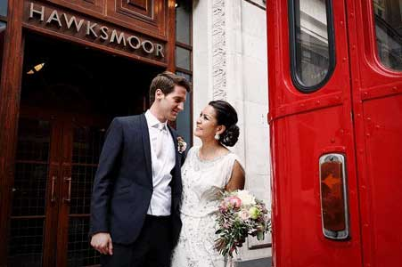
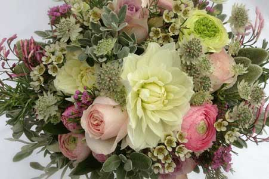
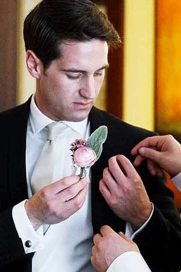
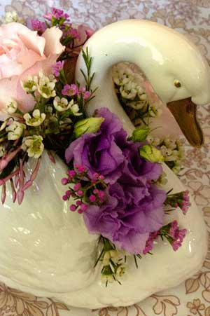

City Style

Lanny and Adam’s fabulous vintage Central London wedding
The Venues

The ceremony took place in the world famous St Brides Church on Fleet Street. With its wedding-cake spire and striking 1950s interior, it’s packed with character, so the couple chose simple floral garlands to adorn the stalls where their guests were seated.
The reception was held in the heart of the City at Hawksmoor Guildhall. Its wooden paneling and quirky vintage features was the perfect setting for this grown-up and stylish wedding.
Vintage Vintage
Lanny’s vintage-inspired wedding dress had a silver grey top layer and intricate beading and set the scene for the look and feel of the bridal party’s bouquets and buttonholes. Her keen interest in flowers and attention to detail meant that a comprehensive list of floral ingredients could be prepared for the big day. Lanny was also happy for Sophie to include some experimental components into the wedding, such as including vintage silver feature flowers in each table arrangement. After working through a few ideas for the reception, the selected design was to use mismatched vintage vases for the tables with unique but complementary arrangements in each one. The leg-work to charity shops and car boot sales paid off as the overall effect was eclectic and eye-catching and had effortless charm.
The Flowers
The first dahlias to appear this season were snapped up and became the focal point for Lanny’s beautiful pink, cream and grey bouquet. Carefully selected blooms gave a vintage feel whilst its unusual oval-shape gave it a contemporary edge. Other flowers included ranunculus, garden roses, peonies, waxflowers, astrantia, jasmine, senecio and lambs ear.
The buttonholes were ranunculus with waxflower and lambs ear, with stems exposed and bound with fine silver wire.
A Lucky Find
Sophie found a beautiful vintage china swan for the top table, which Lanny and Adam requested to keep as a lasting reminder of their wonderful day.